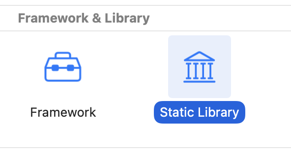
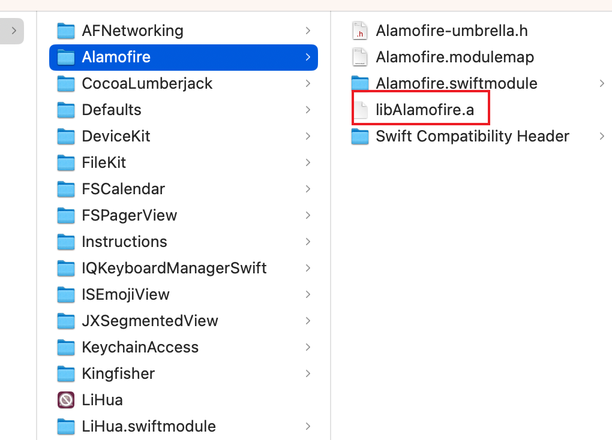

WorkSpace下多Project依赖管理
场景：使用pod做依赖管理的老项目，需要把一些功能模块抽出去做framework，要求抽出去的代码最好不要再手动处理资源引用类似的问题。
一、不同类型库最终生成的包
.dylib动态库被弃用，.a的静态库可以创建，但是建议用framework，framework有命名空间和更好的封装性。这里讨论的都是framework处理的情况，创建framework默认是动态的，可以在mach-o type选成静态库。
- 静态framework：可执行二进制文件最终会和主项目链接在一起，framework只类似一个中间产物。framework中包含的资源文件，需要手动编写脚本挪到主bundle中，被引用的framework不需要设置成embed & sign也可以正常运行；
- 动态framework：framework会被挪到主bundle中的frameworks文件夹中。查看链接信息会发现@rpath/FrameworkDynamic.framework/FrameworkDynamic，其中@rpath就是包内的frameworks路径，在程序运行的时候动态引入，引入需要设置embed & sign，不然会报错dyld[48591]: Library not loaded: @rpath/FrameworkDynamic.framework/FrameworkDynamic。
1 | |
2、资源引用
- 静态framework：资源可以简单暴力的放在包根路径下，代码里面直接imageName或者使用R索引不用改动。缺点是和其他framework拷贝过去的或者主项目的资源不能同名，如果framework下用了
assets需要脚本xcrun actool命令和主工程的assets合成在一个car。在pod管理的framework中，pod会根据resource_bundles或者resources字段做专门的处理后面再谈。 - 动态framework：不用单独的脚本进行处理，不会导致命名冲突。如果是通过R这个库就完美解决不用改代码，因为R本身使用本class的bundle去索引。如果是imageName需要改成
bundleForClass去索引，因为bundle的路径发生了变化，imageName还会通过mainbundle索引，需要改成bundleForClass去找。
二、Cocoapod是如何把依赖库链接和资源索引的？
Cocoapod将所有的依赖库根据podfile的配置，编译各个库输出到中间文件夹，本篇多个截图中可以看到。根据配置生成不同的xcconfig文件配置（主要是库索引），把这些库索引链接到主项目上。还会根据情况自动生成了一些脚本，处理资源的问题和库瘦身等。
1、不使用use_framework!，pod生成的中间文件夹如下：
资源文件如果是通过resources引入的直接放在mainbundle目录下，如果是resource_bundles+key，会自动帮你生成一个bundle，这个bundle命名为key放在mainbundle下，建议使用这种。
2、使用use_framework!，pod生成的中间文件夹如下：
- 用的默认动态framework
- 用的静态framework
use_frameworks! :linkage => :static,中间目录看不出区别（只有通过file命令可以查看到二进制文件是static的），包里面如下，可以查看到bundle资源在外面。
Note: 如果一个库spec指定了s.static_framework = true，或者就是一个.a文件，这里优先级高于podfile中的设置，最终集成方式还是按照静态库处理。
1 | |
总结：
四条基本原则：
- 如果一个framework依赖了静态库，最好保持统一都是静态；
- 动态framework抽离起来，代码最无损，支持更便捷；
- 静态就存在资源迁移和重名问题；
imagename只会找主bundle，R找r文件所在bundle；
最佳实践：
- 自制动态framework使用
R索引，完美支持，但是不能用imagename； - 如果自制的framework依赖静态库，mach-o type设置成静态，可以用
R索引或者imagename，需要脚本处理资源合并； - podfile默认使用useframework！，正常一个库依赖静态的都会有设置成自己是静态的，如果不行可以在post_install钩子设置mach-o type；
- 自制私有动态pod库，spec资源引用采用
resources，支持用R，用R每次更新文件需要重新生成文件一下，不是在主工程使用R有点麻烦，写一个资源索引的方法来的更方便； - 自制私有静态pod库，spec资源引用采用
resource_bundles+key的形式，理论上可以用imagename或者R，和上面一条一样不如写一个资源索引的方法来的方便。因为pod工具自身会输出脚本移动资源，所以不用手动处理。
本博客所有文章除特别声明外，均采用 CC BY-NC-SA 4.0 许可协议。转载请注明来自 Jim zhang's Blog！